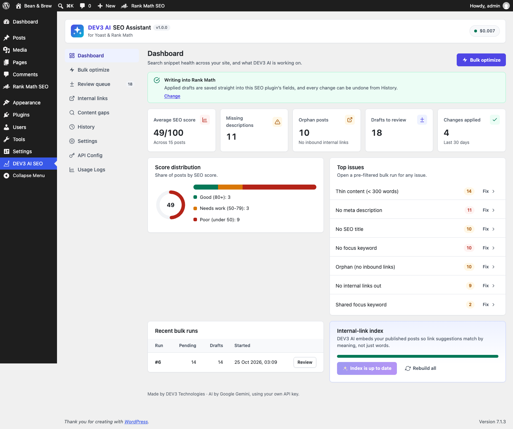
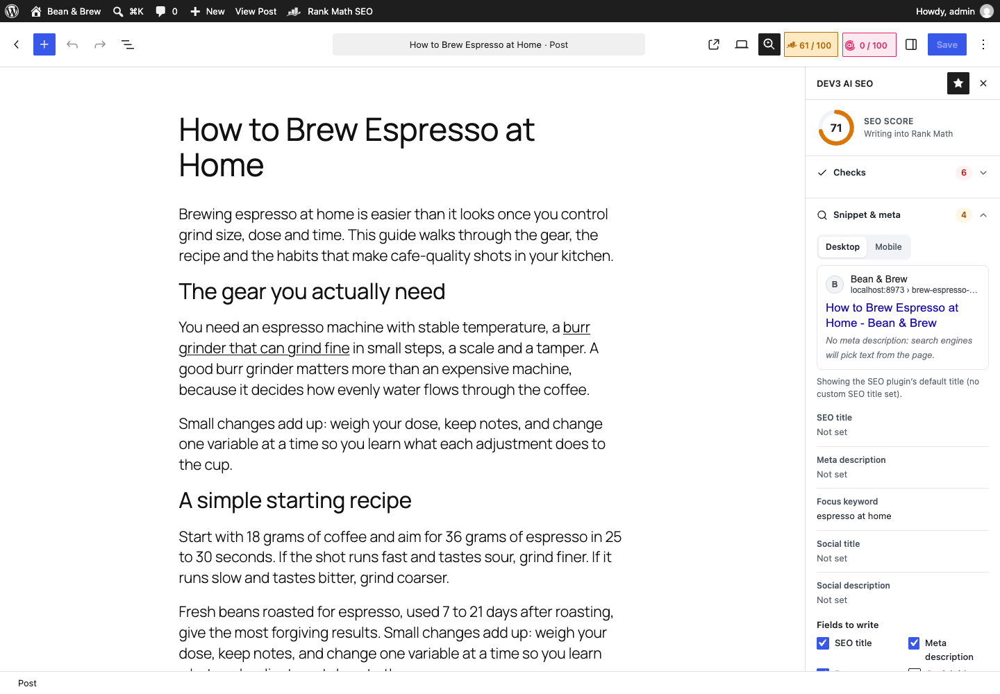
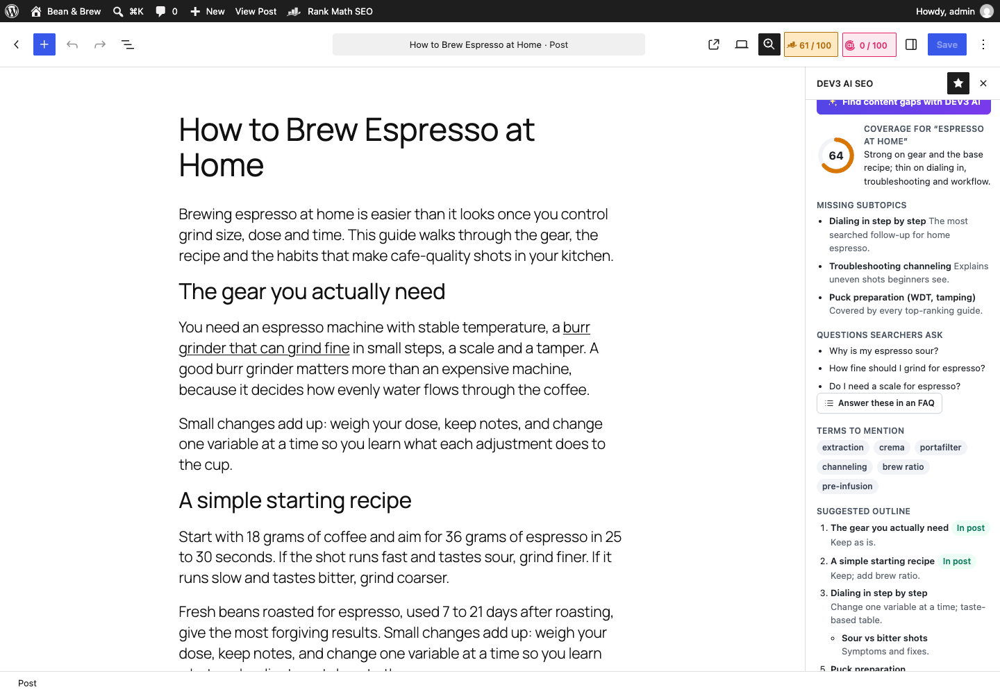
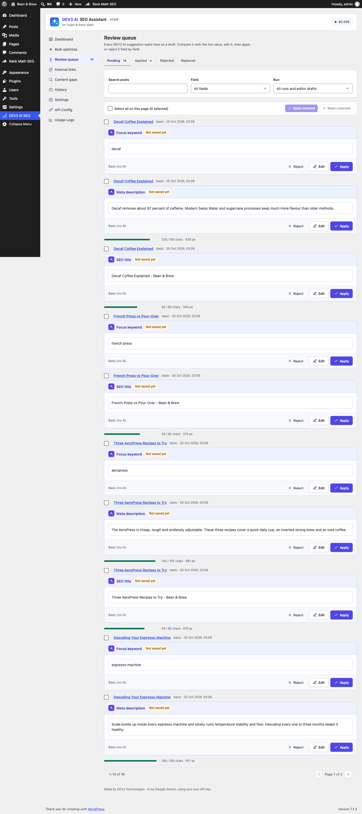
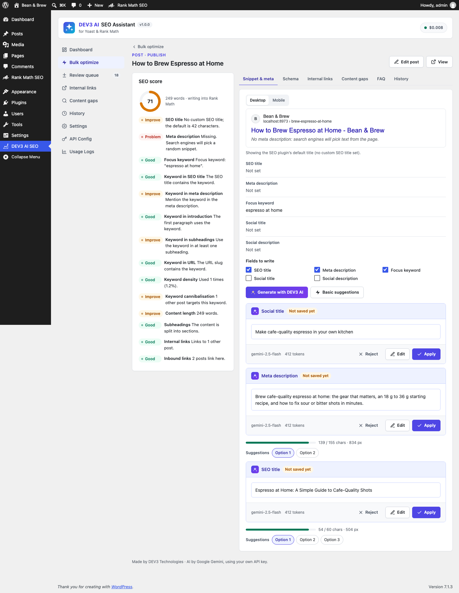
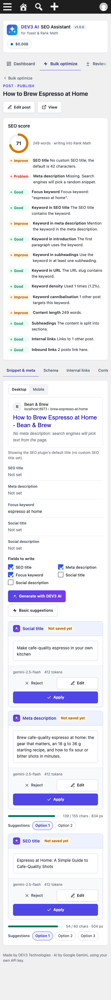

Installation
- WordPress 6.0+ and PHP 7.4+ (tested on PHP 8.3). The editor sidebar needs the block editor.
- Plugins > Add New > Upload Plugin, choose
dev3-ai-seo-assistant.zip, activate. - Install and activate Yoast SEO or Rank Math (free is enough). DEV3 detects it automatically. With Rank Math, finish or skip its setup wizard so Rank Math prints its head tags.
- Optional: SEOPress or All in One SEO are supported as well. With no SEO plugin, DEV3 stores the fields itself and prints the title, meta description, Open Graph tags and JSON-LD.
Google Gemini API key
- Create a key at Google AI Studio.
- Open DEV3 AI SEO > API Config, paste the key, click Validate, then Save. The key is stored encrypted and never sent to the browser. You can also define
DEV3SE_GEMINI_API_KEYinwp-config.php. - Pick models (default
gemini-2.5-flash; embeddingsgemini-embedding-001), set a monthly budget, turn AI off globally or mask personal data in prompts.
Everything except the AI buttons works without a key: checks, scores, reports, basic suggestions, word-match link suggestions, FAQ from question headings, and history.
Editor sidebar
Click the DEV3 AI SEO icon in the editor toolbar. Sections:
- Checks: title and description length, keyword in title, description, introduction, subheadings and URL, keyword density, cannibalisation, content length, subheadings, image alt text, internal links in and out. Score 0-100.
- Snippet & meta: Google-style preview (desktop/mobile), current values with character and pixel meters. Choose the fields and click Generate with DEV3 AI or Basic suggestions. Each field becomes a draft: Changes / Side by side / Draft views, up to 3 suggestions, Edit, Apply, Reject. Applying writes into the SEO plugin and updates its own editor panel at once, so saving the post keeps the value.
- Schema: suggested schema type plus extra JSON-LD pieces, as JSON drafts.
- Internal links: related posts with a highlighted anchor in its paragraph. Insert link adds it to that paragraph block.
- Content gaps & outline: coverage score, missing subtopics, questions, terms and an outline. Insert missing sections appends headings with writing notes; Answer these in an FAQ sends the questions to the FAQ section.
- FAQ: generate or collect questions, edit them, then Insert FAQ block.
- History: this post's applied changes with Undo.
Bulk optimize & Review queue
- Bulk optimize: filter by search, post type, status or issue (no meta description, title too long, orphan…). Select posts (or use “All matching the filter”, up to 2,000), choose fields, writer (DEV3 AI or Basic rules) and “Only fill empty fields”, then start. The run is a background job with progress, cancel and retry.
- Review queue: drafts per field with a diff against the live value. Apply or reject one, select several, or Apply all pending of this run (background job). The Posts list bulk action “Optimize with DEV3 AI” opens Bulk optimize with those posts.
- If a field changed after its draft was made, Apply shows the current value and asks before overwriting.
History & undo
Every applied draft stores the value before and after, the user and the time. Undo restores the old value (or removes the key if it was empty). If the value changed since, Undo asks first. Runs can be undone as a whole from History (filter by run). Post content changes also create normal WordPress revisions.
Internal links
With DEV3 AI, published posts are embedded (title, keyword, excerpt, headings, opening text) and kept fresh when posts change (setting “Keep the link index fresh”). Build or update the index from Dashboard or Internal links. Suggestions never link a post to itself or to posts it already links to, and anchors must exist word for word in the paragraph. Without AI, suggestions use TF-IDF word matching. The report lists inbound and outbound links per post and orphans.
Content gaps
The site report lists duplicate SEO titles, keyword cannibalisation, posts without a meta description, thin content, orphans and images without alt text. Suggest topics with DEV3 AI proposes new articles with a keyword, the reason and which posts should link to them.
Schema & FAQ output
| SEO plugin | Schema type | Extra JSON-LD | FAQ block |
|---|---|---|---|
| Yoast SEO | Yoast Schema tab (page type / article type) | Added to Yoast's graph (wpseo_schema_graph) | Yoast FAQ block |
| Rank Math | Replaces the main Article/WebPage type in Rank Math's graph | Added via rank_math/json_ld | Rank Math FAQ block |
| SEOPress / AIOSEO / none | DEV3 field | Printed as its own JSON-LD script | Core Details blocks + DEV3 FAQPage schema |
FAQPage schema is printed once: DEV3 skips its own FAQ piece when the SEO plugin's FAQ block is in the post. Shortcode [dev3se_faq id="123"] prints a stored FAQ anywhere.
Using it without AI
Basic suggestions: SEO title from the post title plus brand when it fits, description from the excerpt or opening sentences cut at a sentence, focus keyword from title phrases the text uses most, schema type from simple signals, FAQ from headings that end with “?”.
Settings
| Setting | What it does |
|---|---|
| Write into | Auto-detect, or force Yoast SEO, Rank Math, SEOPress, All in One SEO or DEV3 native fields. |
| Title / description limits | Used by checks, meters and generators (default 60 and 120-155 characters). |
| Separator, brand, brand suffix | How basic and AI titles add your brand. |
| Tone, language, house style | Passed to DEV3 AI prompts. |
| Suggestions per post, minimum similarity, auto index | Internal links. |
| Content types, score column | Which post types DEV3 works on. |
| Native meta output, schema output | Front-end output toggles. |
Hooks for developers
| Hook | Type | Use |
|---|---|---|
dev3se_adapters | filter | Add an SEO plugin adapter (subclass Dev3\AiSeoAssistant\Seo\Adapter). |
dev3se_adapter | filter | Force the adapter id. |
dev3se_post_types | filter | Post types DEV3 works on. |
dev3se_schema_pieces | filter | JSON-LD pieces output for a post. |
dev3se_corpus_limit | filter | Posts scanned by reports and the link graph (default 3000). |
dev3se_after_write | action | After DEV3 wrote SEO fields (post id, adapter). |
dev3se_draft_applied | action | After a draft was applied (draft, history id). |
dev3se_prompt_dev3se_meta (and _schema, _anchors, _gaps, _faq, _topics) | filter | Change a prompt template. |
dev3se_ai_guard, dev3se_model_prices, dev3se_mask_pii | filter | Core AI controls. |
REST namespace: dev3se/v1 (status, posts, posts/<id>/meta|schema|links|gaps|faq, drafts, history, bulk, index, report). All routes need a logged-in user, a REST nonce and the right capability (edit_post for a post, manage_options for site-wide tools).
FAQ
Will it overwrite what I wrote?
No. Drafts never change anything until applied, “Only fill empty fields” skips existing values, and Apply/Undo check for newer edits.
Rank Math title does not change on the site.
Rank Math only prints head tags after its setup wizard has been completed or skipped.
Can editors and authors use it?
Yes, in the editor sidebar for posts they can edit. Bulk runs, reports and settings are for administrators (filter dev3se_manage_capability).
Privacy
Only the fields a feature needs are sent to Google Gemini. A privacy-policy snippet is added to Settings > Privacy, and the usage log is covered by the personal data exporter/eraser.
Changelog
1.0.0
- Initial release.